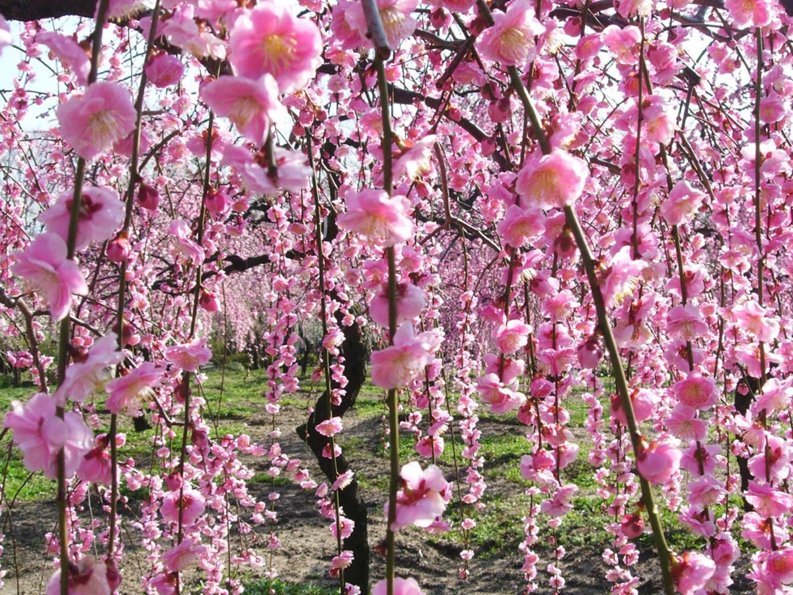

꽃의 종류에 대해 알아봅시다.
수양매화
낙엽소교목으로 높이 5~10m 이고, 가지가 능수버들 처럼 가늘고 길게
아래로 늘어트리며 꽃도 아래로 향하고 있고 능수매화도 꽃색깔에 따라
능수홍매, 능수백매로 불리우고 있다. 나무껍질은 노란빛을 띤 흰색,
초록빛을 띤 흰색, 붉은색 등이다. 잎은 어긋나고 달걀 모양이거나
넓은 달걀 모양이며, 길이 4~10cm이다. 꽃은 잎보다 먼저 피고 연한
붉은색을 띤 흰빛이며 향기가 난다. 꽃받침조각은 5개로서 둥근
모양이고 꽃잎은 여러 장이며, 넓은 달걀을 거꾸로 세워놓은 모양이다.
수술은 많고 씨방에는 털이 빽빽이 난다. 열매는 공 모양의 안에는
딱딱한 씨앗이 있고 녹색이다. 7월에 노란색으로 익고 털이 빽빽이
나며 신맛이 강하다.
장미
역사적으로 볼 때는 서양권에서는 고대 그리스·고대 로마 시대부터
서아시아에서 유럽 지역의 야생종과 이들의 자연교잡에 의한 변종이
재배되고 있었으며, 이때부터 르네상스 시대에 걸쳐 주로 유럽
남부에서 많이 재배되었다. 이후 유럽인들이 청나라로부터 월계화(Rosa
chinensis)의 품종들을 도입하여 기존 유럽 품종들과 교배시키면서
현대 장미 품종들의 기반이 잡혔다. 지금까지 2만 5천여 종이
개발되었으나 현존하는 것은 6~7천 종이며, 해마다 200종 이상의 새
품종이 개발되고 있다고 한다.
개나리
봄에 피기 때문에 대체적으로 전통적으로 진달래, 그리고 비교적
최근에는 벚꽃과 함께 봄을 상징하는 꽃이기도 하다.[2] 다만 벚꽃보다
개화 시기가 빠르기 때문에(보통 3월 말) 보통은 진달래와 엮여서 긴
겨울이 지나고 따뜻한 봄이 찾아온 걸 상징한다. 나리와 꽃 모양이
비슷한데, 개나리의 개_는 [開 열 개/ 봄을 열다] 라는 의미로
나리앞에 접두사로 붙여 부른다. 나리와는 외떡잎식물강이 아닌
쌍떡잎식물강으로 강부터 다르다.
작약
보통은 초여름, 이르면 5월경에 꽃이 피어나는데, 꽃의 크기가 상당히
크고 향기가 엄청 진하다. 주로 장미꽃처럼 달고 상쾌한 향기가 난다
하는데 실재로 생화의 향을 가까이서 맡아보면 향이 매우 강한 종류의
경우 너무 진해서 오히려 쓰고 독한 느낌까지 든다. 다만 향수로
만들어 정제할 경우 보통 사람들이 작약 향기 설명할 때 나는 향기로운
플로럴 계열의 향이 난다. 이 경우 장미와 비슷하지만 톡 쏘는
느낌(독한 느낌)이 조금 덜해 부드러운 느낌이 묻어난다. 여러 품종이
있다 하니 관상용으로 개량된 것과 향료용으로 개량된 것의 향의
차이가 있을 수도 있다. 같은 꽃이어도 관상용으로 품종개량된 것은
꽃이 예쁜 대신 향기가 약하거나 향료용으로 개량된 것에 비해 그다지
좋지 않은 경우가 있는데, 장미꽃도 이와 비슷한 경우에 속한다. 향
때문에 향료로도 쓰는데 단독으로 쓰기도 하지만 향수로 쓸 경우 보통
다른 꽃들의 향과 혼합해서 쓰는 경우가 많다.
